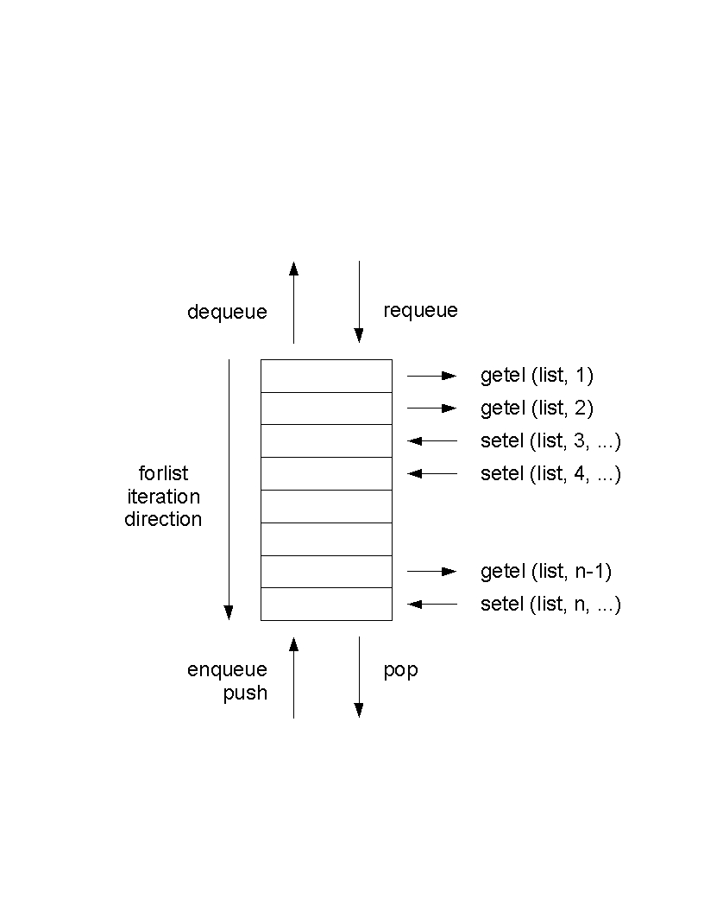

Table of Contents
List of Examples
Table of Contents
The LifeLines programming subsystem lets you produce reports in any style or layout. You may generate files in troff, Postscript, TeX, SGML or any other ASCII-based format, for further text processing and printing. You access the report generator by choosing the r command from the main menu. You may also use the programming subsystem to create query and other processing programs that write their results directly upon the screen. For example, there is a LifeLines program that computes the relationship between any two persons in a database.
Each LifeLines program is written in the LifeLines programming language, and the programs are stored in normal files. When you direct LifeLines to run a program, it asks you for the name of the program file, asks you where you want the program's output written, and then runs the program.
For example, say you want LifeLines to generate an ahnentafel (ancestor) report for Tom Wetmore. Such a report would show Tom Wetmore, his parents, grandparents, great-grandparents, and so on. It would like like the following:
Example 1.1. Example of ahnentafel report
1. Thomas Trask WETMORE IV
b. 18 December 1949, New London, Connecticut
2. Thomas Trask WETMORE III
b. 15 October 1925, New London, Connecticut
3. Joan Marie HANCOCK
b. 6 June 1928, New London, Connecticut
4. Thomas Trask WETMORE Jr
b. 5 May 1896, New London, Connecticut
d. 8 November 1970, New London, Connecticut
5. Vivian Genevieve BROWN
b. 5 April 1896, Mondovi, Wisconsin
6. Richard James HANCOCK
b. 18 August 1904, New London, Connecticut
d. 24 December 1976, Waterford, Connecticut
7. Muriel Armstrong SMITH
b. 28 October 1905, New Haven, Connecticut
8. Thomas Trask WETMORE Sr
b. 13 March 1866, St. Mary's Bay, Nova Scotia
d. 17 February 1947, New London, Connecticut
9. Margaret Ellen KANEEN
b. 27 October 1859, Liverpool, England
d. 10 May 1900, New London, Connecticut
... lots more
Here is a LifeLines program that generates this report:
Example 1.2. Example of ahnentafel report script
/*
* @progname ahnentafel_tutorial.ll
* @version 1.0
* @author Wetmore
* @category sample
* @output text
* @description
*
* Generate an ahnentafel chart for the selected person (tutorial sample).
*/
proc main ()
{
getindi(indi)
list(ilist)
list(alist)
enqueue(ilist, indi) /* list of people needing to be displayed */
enqueue(alist, 1) /* ancestor numbers for people on ilist */
/*
Our basic loop is we take the next person who needs to be displayed,
display them, and then record their parents as needing to be displayed.
*/
while (indi, dequeue(ilist)) {
/* display person we just pulled off list */
set(ahnen, dequeue(alist))
d(ahnen) ". " name(indi) nl()
if (e, birth(indi)) { " b. " long(e) nl() }
if (e, death(indi)) { " d. " long(e) nl() }
/* add person's parents to list to display */
if (par, father(indi)) {
enqueue(ilist, par)
enqueue(alist, mul(2,ahnen))
}
if (par,mother(indi)) {
enqueue(ilist, par)
enqueue(alist, add(1,mul(2,ahnen)))
}
}
}
Say this program is in the file
ahnentafel_tutorial. When you choose the
r option from the main menu,
LifeLines asks:
What is the name of the report program? enter string:
You enter
ahnentafel_tutorial
What is the name of the output file? enter file name:
You enter a file name, say
my.ahnenmy.ahnen. LifeLines
reports any syntax or run-time errors found while trying to
run the program.
A LifeLines program is made up of
procedures and functions; every
program must contain at least one procedure named
main. The main
procedure runs first; it may call other
procedures, functions and
built-in functions. In the ahnentafel example
there is only one procedure.
In the example program, there are some comments at the top,
to tell the reader a bit about the program. The comments run
from /* to */, and are
not necessary (but are suggested).
A procedure body is a sequence of statements. In the example program, the first five statements are:
getindi(indi) list(ilist) list(alist) enqueue(ilist, indi) enqueue(alist, 1)
The first statement calls the
getindi (get individual) built-in
function, which causes
LifeLines to ask you to identify a
person using the zip browse style of identification:
Identify person for interpreted report enter name:
After you identify a person, he or she is assigned to the
variable indi. The next two
statements declare two list
variables, ilist and
alist. Lists hold sequences of
things; there are operations for placing things on lists,
taking things off, and iterating through the list elements. In
the example, ilist holds a list of
ancestors, in ahnentafel order, who have not yet been reported
on, and alist holds their respective
ahnentafel numbers.
The next two statements call the enqueue
function, adding the first members to both lists. The person
identified by the getindi function is
made the first member of ilist, and the
number one, this person's ahnentafel number, is made the first
member of alist.
The rest of the program is:
while (indi, dequeue(ilist)) {
set(ahnen, dequeue(alist))
d(ahnen) ". " name(indi) nl()
if (e, birth(indi)) { " b. " long(e) nl() }
if (e, death(indi)) { " d. " long(e) nl() }
if (par, father(indi)) {
enqueue(ilist, par)
enqueue(alist, mul(2,ahnen))
}
if (par, mother(indi)) {
enqueue(ilist, par)
enqueue(alist, add(1,mul(2,ahnen)))
}
}
This is a loop that iteratively removes persons and their ahnentafel numbers from the two lists, and then prints their names and birth and death information. If the persons have parents in the database, their parents and their parents' ahnentafel numbers are then put at the ends of the lists. The loop iterates until the list is empty.
The loop is a while loop statement. The line:
while (indi, dequeue(ilist)) {
removes (via dequeue) a person from ilist, and assigns the person to variable indi. As long as there
are persons on ilist, another iteration of the loop follows.
The statement:
set(ahnen, dequeue(alist))
is an assignment statement. The second argument is evaluated; its value is assigned to the first
argument, which must be a variable. Here the next number in alist is removed and assigned to variable
ahnen. This is the ahnentafel number of the person just removed from ilist.
The line:
d(ahnen) ". " name(indi) nl()
contains four expression statements; when expressions are used as statements, their values, if any, are
treated as strings and written directly to the report output file. The d function converts its integer
argument to a numeric string. The ". " is a literal (constant) string value. The name function returns the
default form of a person's name. The nl function returns a string containing the newline character.
The next two lines:
if (e, birth(indi)) { " b. " long(e) nl() }
if (e, death(indi)) { " d. " long(e) nl() }
write out basic birth and death information about a person. These
lines are if statements. The second argument in the
conditional is evaluated and assigned to the first argument, which
must be a variable. The first if statement calls the
birth function, returning the first birth event in a person's
record. If the event exists it is assigned to variable
e, and the body (the items between the
curly brackets) of the if statement is executed. The
body consists of three expression
statements: a literal, and calls to the long and
nl functions. Long takes an
event and returns the values of
the first DATE and
PLAC lines in the event.
Finally in the program is:
if (par, father(indi)) {
enqueue(ilist,par)
enqueue(alist,mul(2,ahnen))
}
if (par,mother(indi)) {
enqueue(ilist,par)
enqueue(alist,add(1,mul(2,ahnen)))
}
These lines add the father and mother of the current person, if either or both are in the database, to
ilist. They also compute and add the parents' ahnentafel numbers to alist. A father's ahnentafel
number is twice that of his child. A mother's ahnentafel number is twice that of her child plus one.
These values are computed with the mul and add functions.
The following is a good template to use when creating a new report from scratch.
/*
* @progname reportname
* @version Version Number.
* @author report author and possible email address
* @category ????
* @output Format of Report Output
* @description The following paragraph is used to populate index.html.
*
* This report .... (Note, the text in the 1st paragraph following the @keyword
* lines is used as a description in the automatically generated index.html
* file. The text following the @description is not used for this purpose.)
* The description lines can be written with or without the *'s on the left
* they will be removed when generating index.html.
*
* Additional descriptive text
*/
proc main()
{
}
As mentioned earlier, reports may be invoked interactively from the main menu via the r option from the main menu.
Alternatively, llines may be called with the -x option to have it immediately run a report. For example, to have lifelines run the example ahnentafel report above, on a database named wetmore, this command llines -x ahnentafel_tutorial wetmore would be used.
For more efficient operation from scripts, the lifelines distribution includes a smaller program llexec which includes all functionality of lifelines except the curses GUI. llexec is made specifically, therefore, for invocations such as llexec -x ahnentafel_tutorial wetmore
Table of Contents
LifeLines programs are stored in files you edit with a screen editor. Programs are not edited from within
the LifeLines program; edit them as you would any text file. The programs may be stored in any
directories; they do not have to be kept in or associated with LifeLines databases. You may set the
LLPROGRAMS shell variable to hold a list of directories that LifeLines will use to automatically
search for programs when you request program execution.
A LifeLines program is made up of one or more procedures and functions. A procedure has format:
proc name(params) { statements }
Name is the name of the procedure, params is an optional list of parameters separated by commas,
and statements is a list of statements that make up the procedure body. Report generation begins with
the first statement in the procedure named main. Procedures may call other procedures and functions.
Procedures are called with the call statement described below.When a procedure is called, the
statements making up its body are executed.
A function has format:
func name(params) { statements }
Name, params and statements are defined as in procedures. Functions may call other procedures and functions. When a function is called the statements that make it up are executed. A function differs from a procedure by returning a value to the procedure or function that calls it. Values are returned by the return statement, described below. Recursive functions are allowed. A function is called by invoking it in an expression.
Function and procedure parameters are passed by value except for list, set and table types which are passed by reference. Redeclaration of a parameter instantiates a new variable of the stated or implied type. The previous instance continues to exist in the scope of the caller.
You may comment your LifeLines programs using the following notation:
/*...comment text including any characters except */... */
These comments may be inserted anywhere in the program file.
You should put in some report header comments, because they will provide useful text for your report when it is included in the report list seen by the user who uses the lifelines pick report menu function. Report header comments are some specific comments at the top of the report, with keywords preceded by @ signs. The following is an illustration of report header comments, with explanations inside them:
/* * @progname The name of the report without the extension. This shows in the pick report option. * @version Version Number of the report. This is stored here and not in the report name. * @author Name of the author of this report and email address if he/she desires. * @category ???? * @output Modifies Database | text | HTML | GEDCOM | RTF | XML | PostScript | etc. * @description The first paragraph after this is used to generate the description in the index.html. This report .... */
Comments begin with a /* and end with a */. Comments may appear on lines of their own or on lines
that have program constructs. Comments may span many lines. Comments may not be nested.
There are a number of statement types. The simplest is an expression statement, an expression that is not part of any other statement or expression. Expressions are defined more fully below. An expression statement is evaluated, and if its value is non-null (non-zero), it is assumed to be a string, and written to the program output file. If its value is null, nothing is written to the output file. For example, the expression
name(indi)
, where indi is a person, returns the person's name and writes it to the output file. On the other hand, the expression
set(n, nspouses(indi))
assigns the
variable n the number of spouses that
person indi has, but since
set returns
null, nothing is written to the
output file.
The programming language includes if statements, while statements and procedure call statements, with the following formats:
if ([varb,] expr) { statements }
[ elsif ([varb], expr) { statements } ]*
[ else { statements } ]
while ([varb,] expr ) { statements }
call name(args)
Square brackets indicate optional parts of the statement syntax. An if statement is executed by first evaluating the conditional expression in the if clause. If non-zero, the statements in the if clause are evaluated, and the rest of the if statement, if any, is ignored. If the value is zero, and there is an elsif clause following, the conditional in the elsif clause is evaluated, and if non-zero, the statements in that clause are executed. Conditionals are evaluated until one of them is non-zero, or until there are no more. If no conditional is non-zero, and if the if statement ends with an else clause, the statements in the else clause are executed. There are two forms of conditional expressions. If the conditional is a single expression, it is simply evaluated. If the conditional is a variable followed by an expression, the expression is evaluated and its value is assigned to the variable.
Note that if treats null strings as false, but empty strings as true. This has the benefit that
if (birth(indi))
will return true if there is a BIRT record, even if it is empty, but will return false if there is no BIRT record at all.
The while statement provides a looping mechanism. The conditional is evaluated, and if non-zero, the body of the loop is executed. After each iteration the expression is reevaluated; as long as it remains non-zero, the loop is repeated.
The call statement provides procedure calls. Name must match one of the procedures defined in the report program. Args is a list of argument expressions separated by commas. Recursion is allowed. When a call is executed, the values of its arguments are evaluated and used to initialize the procedure's parameters. The procedure is then executed. When the procedure completes, execution resumes with the first item after the call.
The following report language statements are commonly encountered only near the top of a report:
char_encoding(string)
require(string)
option(string)
include(string)
global(varb)
The char_encoding statement specifies what character encoding scheme is used by the report, so that the report processor can correctly interpret bytes not in ASCII (e.g., accented letters). An example specifying a character encoding common in Western Europe:
char_encoding("ISO-8859-1")
The option statement allows the report writer to specify options. The only option currently available is
"explicitvars", which causes any use of variables not previously declared or set to be reported as a parsing error. The
require statement allows the report writer to specify that this report needs a version of the report
interpreter no older than that specified.
The include statement includes the contents of another file into the current file; its string expression is
the name of another LifeLines program file. It is described in more detail below. The global statement
must be used outside the scope of any procedure or function; it declares a variable to have global scope. The
variable is initialized to 0.
The report language also includes the following statements, which mimic some common programming languages:
set(varb, expr)
continue()
break()
return([expr])
The set statement is the assignment statement; the expression is evaluated, and its value is assigned
to the variable. The continue statement jumps to the bottom of the current loop, but does not leave the
loop. The break statement breaks out of the most closely nested loop. The return statement returns from
the current procedure or function. Procedures have return statements without expressions; functions
have return statements with expressions. None of these statements return a value, so none has a direct
effect on program output.
There are four types of expressions: literals, numbers, variables and built-in or user defined function calls.
A literal is any string enclosed in double quotes; its value is itself. A number is any integer or floating point constant; its value is itself. A variable is a named location that can be assigned different values during program execution. The value of a variable is the last value assigned to it. Variables do not have fixed type; at different times in a program, the same variable may be assigned data of completely different types. An identifier followed by comma-separated list of expressions enclosed in parentheses, is either a call to a built-in function or a call to a user-defined function.
The LifeLines programming language provides an include feature. Using this feature one LifeLines program can refer to other LifeLines programs. This feature is provided by the include statement:
include(string)
where string is a quoted string that is the name of another LifeLines program file. When an include
statement is encountered, the program that it refers to is read at that point, exactly as if the contents of
included file had been in the body of the original file at that point. This allows you to create LifeLines
program library files that can be used by many programs. Included files may in turn contain include
statements, and so on to any depth. LifeLines will use the LLPROGRAMS shell variable, if set, to
search for the include files. Each file included with a include
statement is only read once. If multiple include statements are encountered
that include the same file, only the first statement has any effect.
The only main procedure actually executed is the one in the report the user chose. main procedures in other reports which are included do not get run. This allows a module intended to be included in other programs to have a main procedure for test purposes. If multiple functions or procedures with the same name are included (other than the name main) a runtime error is generated and the program is not run.
There is a long list of built-in functions, and this list will continue to grow for some time. The first subsection below describes the value types used in LifeLines programs; these are the types of variables, function parameters and function return values. In the remaining sections the built-in functions are separated into logical categories and described.
union of all types
boolean (0 represents false; anything else represents true)
event; reference to substructure of nodes in a GEDCOM record (reference)
family; reference to a GEDCOM FAM record (reference)
floating point number (may be used anywhere an INT may be used)
person; reference to a GEDCOM INDI record (reference)
integer (on most systems a 32-bit signed value)
arbitrary length list of any values (reference)
GEDCOM node; reference to a line in a GEDCOM tree/record (reference)
union of all arithmetic types (INT and FLOAT)
a collection of persons each with a value (see person sets below).
text string
keyed look-up table (reference)
type with no values
In the summaries of built-in functions below, each function is shown with its argument types
and its return type. The types are from the preceding list. Sometimes an argument to a
built-in function must be a variable; when this is so its type is given as
XXX_V, where XXX is one of the types above. The built-ins do not check
the types of their arguments. Variables can hold values of any type, though at any one time
they will hold values of only one type. Note that EVENT is a subtype of NODE, and
BOOL is a subtype of INT. Built-ins with type VOID actually return
null (zero) values.
Reference types (denoted above in parentheses) obey "pointer semantics", which is to say that assigning one to another variable results in both variables pointing at the same data (no copy is made). Therefore, if you pass a string to a function which changes the string, the caller does not see the change, because a string is not a reference type. On the other hand, if you pass a table to a function which alters the table, the caller does see the change, because a table is a reference type.
The report generator provides a number of iterator statements for looping through genealogical and other types of data. For example, the children statement iterates through the children of a family, the spouses statement iterates through the spouses of a person, and the families statement iterates through the families that a person is a spouse or parent in.
Usually the first argument to the iterator is an expression that evaluates to an individual or a family. The other arguments of the iterator are variable names that are set with values for each iteration. The last argument is often a variable name used as a counter. It starts with the value of one and is increased by one for each iteration of the loop. After completion of the iteration, these variables have the value null.
children(afam,indi,cnt) { commands }For example, the first argument to children is the family that the iterator will operate on. This iterator will execute the block of commands for each child in the specified family. The second argument is set to each child in the family in the order they are listed in the family and the third argument is the loop counter which starts at one and is incremented by one each time the block of commands is executed. The two variables indi and cnt will have the value null after the iteration has completed.
For the purpose of traversing all records in the database, the following iterators may be used:
| forindi | Iterate over all people |
| forfam | Iterate over all families |
| forsour | Iterate over all sources |
| foreven | Iterate over all events |
| forothr | Iterate over all other record types |
All the iterators are described in more detail later in the section where their definition occurs.
NUMBER add( | NUMBERNUMBER...); |
NUMBER,
NUMBER
...;addition - two to 32 arguments
NUMBER sub( | NUMBERNUMBER); |
NUMBER,
NUMBER;subtraction
NUMBER mul( | NUMBERNUMBER...); |
NUMBER,
NUMBER
...;multiplication - two to 32 arguments
NUMBER div( | NUMBERNUMBER); |
NUMBER,
NUMBER;division
INT mod( | INTINT); |
INT,
INT;modulus (remainder)
NUMBER exp( | NUMBERINT); |
NUMBER,
INT;exponentiation
NUMBER neg( | NUMBER); |
NUMBER;negation
FLOAT float( | INT); |
INT;convert int to float
INT int( | FLOAT); |
FLOAT;convert float to int
VOID incr( | NUMBERNUMBER); |
NUMBER,NUMBER;increment variable by second argument (or by 1 if no second argument)
VOID decr( | NUMBERNUMBER); |
NUMBER,NUMBER;decrement variable by second argument (or by 1 if no second argument)
BOOL and( | BOOLBOOL...); |
BOOL,
BOOL
...;logical and - two to 32 arguments
BOOL or( | BOOLBOOL...); |
BOOL,
BOOL
...;logical or - two to 32 arguments
BOOL not( | BOOL); |
BOOL;logical not
BOOL eq( | ANYANY); |
ANY,
ANY;equality (not strings)
BOOL ne( | ANYANY); |
ANY,
ANY;non-equality
BOOL lt( | ANYANY); |
ANY,
ANY;less than
BOOL gt( | ANYANY); |
ANY,
ANY
;greater than
BOOL le( | ANYANY); |
ANY,
ANY;less than or equal
BOOL ge( | ANYANY); |
ANY,
ANY;greater than or equal
Add, sub, mul
and div do normal arithmetic of integer or floating values.
If any operand is float, the result is float.
Functions add and mul can have two to
32 arguments; the sum or product of the full set of arguments is computed.
Functions sub and div have
two arguments each; sub subtracts its second argument
from its first, and div divides its first argument by its
second.
The mod function returns the remainder after dividing the
first parameter by the second. If the second argument to
div or mod is zero,
these functions return 0 and generate a run time error.
Exp performs integer exponentiation.
Neg negates its argument.
The functions
float and
int
can be used to explicitly convert a value to float or int where needed.
Incr and decr increment by one and decrement by one, respectively, the value of a variable. The
argument to both functions must be a variable. These functions take an
optional second argument which is the amount to increment or decrement the
variable by.
And and or do logical operations. Both functions take two to 32 arguments. All arguments are and'ed or
or'ed together, respectively. The arguments are evaluated from left to right, but only up to the point
where the final value of the function becomes known. Not does the logical not operation.
Eq, ne, lt, le, gt and ge evaluate the six ordering relationships between two integers.
FLOAT sin( | FLOAT); |
FLOAT;compute sine of argument in degrees
FLOAT cos( | FLOAT); |
FLOAT;compute cosine of argument in degrees
FLOAT tan( | FLOAT); |
FLOAT;compute tangent of argument in degrees
FLOAT arcsin( | FLOAT); |
FLOAT;compute inverse sine of argument
FLOAT arccos( | FLOAT); |
FLOAT;compute inverse cosine of argument
FLOAT arctan( | FLOAT); |
FLOAT;compute inverse tangent of argument
VOID dms2deg( | INT degreeINT minuteINT secondFLOAT_V decimal); |
INT degree,
INT minute,
INT second,
FLOAT_V decimal;convert (degree, minute, second) to decimal degrees
void deg2dms( | FLOAT decimalINT_V degreeINT_V minuteINT_V second); |
FLOAT decimal,
INT_V degree,
INT_V minute,
INT_V second;convert decimal degrees to (degree, minute, second)
FLOAT spdist( | FLOAT lat0FLOAT long0FLOAT lat1FLOAT long1); |
FLOAT lat0,
FLOAT long0,
FLOAT lat1,
FLOAT long1;compute distance between two locations
The trigonometric functions specify angles using degrees. The functions
deg2dms and dms2deg
are provided to convert between (degree,minute,second) notation and decimal
degree representations for angles.
spdist estimates the distance between two spherical
coordinates. The arguments provided are, in order, first latitude, first
longitude, second latitude, second longitude. The result is in kilometers.
STRING name( | INDIBOOL); |
INDI,
BOOL;default name of
STRING fullname( | INDIBOOLBOOLINT); |
INDI,
BOOL,
BOOL,
INT;many name forms of
STRING surname( | INDI); |
INDI;surname of
STRING givens( | INDI); |
INDI;given names of
STRING trimname( | INDIINT); |
INDI,
INT;trimmed name of
EVENT birth( | INDI); |
INDI;first birth event of
EVENT death( | INDI); |
INDI;first death event of
EVENT burial( | INDI); |
INDI;first burial event of
INDI father( | INDI); |
INDI;first father of
INDI mother( | INDI); |
INDI;first mother of
INDI nextsib( | INDI); |
INDI;next (younger) sibling of
INDI prevsib( | INDI); |
INDI;previous (older) sibling of
STRING sex( | INDI); |
INDI;sex of
BOOL male( | INDI); |
INDI;male predicate
BOOL female( | INDI); |
INDI;female predicate
STRING pn( | INDIINT); |
INDI,
INT;pronoun referring to
INT nspouses( | INDI); |
INDI;number of spouses of
INT nfamilies( | INDI); |
INDI;number of families (as spouse/parent) of
FAM parents( | INDI); |
INDI;first parents' family of
STRING title( | INDI); |
INDI;first title of
STRING key( | RECORDBOOL); |
RECORD,
BOOL;internal key of (works for any record type)
STRING soundex( | INDI); |
INDI;SOUNDEX code of
NODE inode( | INDI); |
INDI;root GEDCOM node of
NODE root( | INDI); |
INDI;root GEDCOM node of
INDI indi( | STRING); |
STRING;find person with key value
INDI firstindi( | ); |
first person in database in key order
INDI lastindi( | ); |
last person in database in key order
INDI nextindi( | INDI); |
INDI;next person in database in key order
INDI previndi( | INDI); |
INDI;previous person in database in key order
INDI spouses( | INDIINDI_VFAM_VINT_V); |
INDIINDI_VFAM_VINT_V;all spouses of a person
FAM families( | INDIFAM_VINDI_VINT_V); |
INDIFAM_VINDI_VINT_V;all families
INDI forindi( | INDIINDI_VINT_V); |
INDIINDI_VINT_V;all persons
INDI mothers( | INDIINDI_VFAM_VINT_V); |
INDIINDI_VFAM_VINT_V;all female parents of a person
INDI fathers( | INDIINDI_VFAM_VINT_V); |
INDIINDI_VFAM_VINT_V;all male parents of a person
INDI parents( | INDIINDI_VFAM_VINT_V); |
INDIINDI_VFAM_VINT_V;all families a person is a child of
These functions take a person as a parameter and return information about him or her.
Name returns the default name of a person; this is the name found on the first 1 NAME line in the
person's record; the slashes are removed and the surname is made all capitals; name can take an
optional second parameter - if it is true the function acts as described above; if false, the surname is
kept exactly as it is in the record.
Fullname returns the name of a person in a variety of formats. If the second parameter is true the
surname is shown in upper case; otherwise the surname is as in the record. If the third parameter is
true the parts of the name are shown in the order as found in the record; otherwise the surname is given
first, followed by a comma, followed by the other name parts. The fourth parameter specifies the
maximum length field that can be used to show the name; various conversions occur if it is necessary to
shorten the name to fit this length.
Surname returns the surname of the person, as found in the first 1 NAME line; the slashes are
removed. Givens returns the given names of the person in the same order and format as found in the
first 1 NAME line of the record. Trimname returns the default name of the person trimmed to the
maximum character length given in the second variable.
Birth, death, and burial return the first birth, death, and burial event in the
person's record, respectively. An event is a level 1 GEDCOM node. If there is no matching event these
functions return null.
Father, mother, nextsib and prevsib return the father, mother, next younger sibling and next older
sibling of the person, respectively. If the person has more than one father (mother) the father
(mother) function returns the first one. These functions return null if there is no person in the role.
Sex returns the person's sex as the string M if the person is male, F if the person is female, or U if the
sex of the person is not known. Male and female return true if the person is male or female,
respectively, or false if not.
Pn generates pronouns, useful when generating English text;
the second parameter selects the type of pronoun:
| 0 | He/She |
| 1 | he/she |
| 2 | His/Her |
| 3 | his/her |
| 4 | him/her |
Nspouses returns the number of spouses the person has in the database, and nfamilies returns the
number of families the person is a parent/spouse in; these two values are not necessarily the same.
Parents returns the first family that the person is a child in.
Title returns the value of the first 1 TITL line in the record.
Key returns the key value of a person (or any record);
if there is a second parameter and it is non-null, the leading I (or F
or S or E or X) will be stripped. For example, if
key(curindi) returns I23, then key(curindi,1)
returns 23.
Soundex
returns the Soundex code of the person.
Root and Inode return the root node of the person's GEDCOM node tree. Note that an INDI value is
not a NODE value. If you want to process the nodes within a person node tree, you must first use the
root or inode function to get the root of the person node tree. Root and inode are synonyms.
Indi returns the person whose key is passed as an argument;
if no person has the key indi returns
null.
INDI keys are accepted either as Innn or @Innn@.
Firstindi, nextindi and previndi allow you to iterate through all persons in the database. Firstindi
returns the first person in the database in key order. Nextindi returns the next person after the
argument person in key order. Previndi returns the previous person before the argument person in key
order.
Spouses is an iterator that loops through each spouse a person has. The first argument is a person. The
second argument is a person variable that iterates through the first person's spouses. The third
argument is a family variable that iterates through the families the person and each spouse are in.
The fourth argument is an integer variable that counts the iterations.
The spouses iterator skips any family that has no spouse, whereas the
families iterator does not.
Families is an iterator that loops through the families a person was a spouse/parent in. The first
argument is a person. The second argument is a family variable that iterates through the families the
first person was a spouse/parent in. The third argument iterates through the spouses from the families;
if there is no spouse in a particular family, the variable is set to null for that iteration. The fourth
argument is an integer variable that counts the iterations.
Families and Spouses behave the same
except for one situation. If the person is a spouse in a family that only has
one spouse identified, that family does not show up with the
spouses iterator, but it does show up with the
families iterator. One caution, this situation causes
the 3rd argument of the families iterator to be set to
null. You must check for this.
Forindi is an iterator that loops through every person in
the database in ascending key order. Its first
parameter is a variable that iterates through the persons; its second
parameter is an integer counter
variable that counts the persons starting at one.
mothers is an iterator that loops through every female
parent of the specified individual.
Its first parameter is a person;
its third parameter is a family variable that iterates through the families
that the person is a child in;
its second parameter is a person variable that is the female parent
associated with the family in the third parameter;
The fourth parameter is a variable that counts the families returned starting at one.
Parents is an iterator that loops through every family
that a person is a child in. Note: This iterator's name begins with a
capital P. There is another function of the same name that begins with a
lower case p.
Its first parameter is a person;
its second parameter is a family variable that iterates through the families
that the person is a child in; and
the third parameter is a variable that counts the families returned starting at one.
Forindi is an iterator that loops through every person in
the database in ascending key order. Its first
parameter is a variable that iterates through the persons; its second
parameter is an integer counter
variable that counts the persons starting at one.
fathers and
mothers are iterators that loop through each family
the specified individual is in returns each father or mother found.
If a non-traditional family is processed, there will be separate iterations
for each father or mother found.
EVENT marriage( | FAM); |
FAM;first marriage event of
INDI husband( | FAM); |
FAM;first husband/father of
INDI wife( | FAM); |
FAM;first wife/mother of
INT nchildren( | FAM); |
FAM;number of children in
INDI firstchild( | FAM); |
FAM;first child of
INDI lastchild( | FAM); |
FAM;last child of
STRING key( | FAM|INDIBOOL); |
FAM|INDI,
BOOL;internal key of (works for persons also)
NODE fnode( | FAM); |
FAM;root GEDCOM node of
NODE root( | FAM); |
FAM;root GEDCOM node of
FAM fam( | STRING); |
STRING;find family from key
FAM firstfam( | ); |
first family in database in key order
FAM lastfam( | ); |
last family in database in key order
FAM nextfam( | FAM); |
FAM;next family in database in key order
FAM prevfam( | FAM); |
FAM;previous family in database in key order
INDI children( | FAMINDI_VINT_V); |
FAMINDI_VINT_V;loop through children of family
INDI spouses( | FAMINDI_VINT_V); |
FAMINDI_VINT_V;loop through all husbands and wives of a family
FAM forfam( | FAM_VINT_V); |
FAM_VINT_V;loop through all families in database
These functions take a family as an argument and return information about it.
Marriage returns the first marriage event found in the family record, if any; it returns null if there is
no marriage event.
Husband returns the first husband/father of the family, if any; and wife returns the first
wife/mother of the family, if any. Each returns null if the requested person is not in the family.
Nchildren returns the number of children in the family.
Firstchild and lastchild return the first child and last child in a family, respectively.
Key was described in the section on person functions.
Root and fnode return the root node of a family GEDCOM node tree. Note that a FAM value is not a
NODE value. If you want to process the nodes within a family node tree, you must first use root or
fnode function to get the root of the family node tree. Root and fnode are synonyms.
Fam returns the family who's key is passed as an argument;
if no family has the key fam
returns null. Family keys are accepted
either as Fnnn or @Fnnn@.
Firstfam, nextfam and prevfam allow you to iterate through all families in the database. Firstfam
returns the first family in the database in key order. Nextfam returns the next family after the
argument family in key order. Prevfam returns the previous family before the argument family in key
order.
Children is an iterator that loops through the children in a family. Its first parameter is a family
expression; its second parameter is a variable that iterates through each child; its third parameter is
an integer counter variable that counts the children starting at one. These two variables may be used
within the loop body.
spouses is an iterator that loops through all the
husbands and wives of a family.
Its first parameter is a family expression; its second parameter is a
variable that iterates through each parent; its third parameter is
an integer counter variable that counts the parents starting at one.
These two variables may be used within the loop body.
Forfam is an iterator that loops through every family in the database in ascending key order. Its first
parameter is a variable that iterates through the families; its second parameter is an integer counter
variable that counts the families starting at one.
SOUR forsour( | NODE_VINT_V); |
NODE_VINT_V;loop through all sources in database
EVEN foreven( | NODE_VINT_V); |
NODE_VINT_V;loop through all EVEN nodes in database
OTHR forothr( | NODE_VINT_V); |
NODE_VINT_V;loop through all other (notes, etc.) nodes in database
forsour is an iterator that loops through all the Source
nodes in the database. Its first argument is the SOUR record and its
second parameter is an integer counter variable that counts the sources
elements starting at one.
foreven is an iterator that loops through all the Event
nodes in the database. Its first argument is the EVEN record and its
second parameter is an integer counter variable that counts the events
elements starting at one.
forothr is an iterator that loops through all the Other
nodes in the database. Its first argument is the record (NOTE, etc.) and its
second parameter is an integer counter variable that counts the nodes
starting at one.
VOID list( | LIST_V); |
LIST_V;declare a list
VOID clear( | LIST); |
LIST;clear a list
BOOL empty( | LIST); |
LIST;check if list is empty
INT length( | LIST); |
LIST;length of list
VOID enqueue( | LISTANY); |
LIST,
ANY;enqueue element on list
ANY dequeue( | LIST); |
LIST;dequeue and return element from list
VOID requeue( | LISTANY); |
LIST,
ANY;requeue an element on list
VOID push( | LISTANY); |
LIST,
ANY;push element on list
ANY pop( | LIST); |
LIST;pop and return element from list
VOID setel( | LISTINTANY); |
LIST,
INT,
ANY;array element assignment
ANY getel( | LISTINT); |
LIST,
INT;array element selection
BOOL inlist( | LISTANY); |
LIST,
ANY;is second argument in list.
VOID sort( | LISTLIST); |
LIST,
LIST;sort list elements
VOID rsort( | LISTLIST); |
LIST,
LIST;reverse sort list elements
LIST dup( | LIST); |
LIST;duplicate a list
NODE forlist( | LISTANY_VINT_V); |
LISTANY_VINT_V;loop through all elements of list
LifeLines provides general purpose lists that can be accessed as queues, stacks or arrays. A
list must be declared with the list function before it can be used. Redeclaring an existing
variable with the list clears it and restores it to being
an empty list. If the argument to list() is the name of a
parameter to the current routine, the reference to the calling routines
list is removed and a new list is created.
A list can have any number of elements. Empty returns true if the list
has no elements and false otherwise. Length returns the length of the
list. The only parameter to both is a list. The following diagram
indicates how the various access functions for a list interact:

Enqueue, dequeue and requeue provide queue access to a
list. Enqueue adds an element to the back of a queue, dequeue removes and
returns the element from the front of a queue, and requeue adds an element to the front of a queue.
The first parameter to all three is a list, and the second parameter to enqueue and
requeue is the value to be added to the queue and can be any value.
Push and pop provide stack access to a list. Push pushes
an element on the stack, and pop removes and returns the most recently pushed element from the
stack. The first parameter to both is a list, and the second parameter to push is the value to be
pushed on the stack and can be of any type.
Setel and getel provide array access to a list. Setel
sets a value of an array element, and getel returns the value of an array element. The first
parameter to both is a list; the second parameter to both is an integer index into the array; and the third parameter to
setel is the value to assign to the array element and can be of any type. Array elements are
indexed starting at one. Unassigned elements are assumed to be null
(0). Arrays automatically grow in size to accommodate the largest index value that is used.
Passing 0 references the last element at the other end from 1, and -1 the one before it, etc.
inlist compares the second argument with each element
in the list. If it finds a match inlist returns
true.
sort and rsort sort a list, using the elements of the second array to
determine the new order. Both lists are reordered, so essentially both are sorted using the sort order of the second
argument. (If only one argument is given, it is sorted on its own elements.)
rsort sorts in order reverse of sort.
The order that sort produces places the smallest element at position 1, and the
largest element at the end of the list, such that dequeue
will remove the smallest element.
dup creates a copy of a list. If b is a
list, the function set(a,b) makes the variable a a reference
to the list b. If you
want to make a new list, you must use
set(a,dup(b)).
Forlist is an iterator that loops through the element in a list. Its first parameter is a
LIST expression; its second parameter is a variable that iterates through the list elements; and its third
parameter is an integer counter variable that counts the list elements starting at one.
VOID table( | TABLE_V); |
TABLE_V;declare a table
VOID insert( | TABLESTRINGANY); |
TABLE,
STRING,
ANY;insert entry in table
ANY lookup( | TABLESTRING); |
TABLE,
STRING;lookup and return entry from table
INT length( | TABLE); |
TABLE;size of the table
BOOL empty( | TABLE); |
TABLE;check if table is empty
These functions provide general purpose, keyed tables. A table must be declared with the table
function before it can be used.
Insert adds an object and its key to a table. Its first parameter is a table; the second parameter
is the object's key; and the third parameter is the object itself. The key must be a string and the object can be any
value. If there already is an object in the table with that key, the old object is replaced with the new.
Lookup retrieves an object from a table. Its first parameter is a table, and the second parameter
is the object's key. The function returns the object with that key from the table; if there is no such object,
null is returned.
length returns the number of elements in the table.
STRING xref( | NODE); |
NODE;cross reference index of
STRING tag( | NODE); |
NODE;tag of
STRING value( | NODE); |
NODE;value of
NODE parent( | NODE); |
NODE;parent node of
NODE child( | NODE); |
NODE;first child of
NODE sibling( | NODE); |
NODE;next sibling of
NODE savenode( | NODE); |
NODE;copy a node structure
INT level( | NODE); |
NODE;level of a node
NODE fornodes( | NODENODE_V); |
NODENODE_V;loop through child nodes
NODE fornotes( | NODESTRING_V); |
NODESTRING_V;loop through notes on a node
NODE traverse( | NODENODE_VINT_V); |
NODENODE_VINT_V;loop through all descendent nodes
These functions provide access to the components of a GEDCOM node. All take a GEDCOM node as their only parameter, and each returns a different value associated with the node.
Xref returns the cross reference index of the node, if any; tag returns the tag of the node; and value
returns the value of the node, if any. If there is no cross reference, xref returns null; if there is no value,
value returns null.
Parent returns the parent node of the node, if any; child returns the first child node of the node, if any;
and sibling returns the next sibling node of the node, if any. Whenever there is no such related node,
these functions return null. These three functions allow simple navigation through a GEDCOM node
tree.
Savenode makes a copy of the node, and the substructure of nodes below the node, that is passed to it.
Beware: the memory used to make the copy is never returned to the system.
The level function returns the level of the node.
Fornodes is an iterator that loops through the child nodes of a GEDCOM node. Its first argument is a
node expression, and its second parameter is a variable that iterates through each direct child node of
the first node.
Fornotes is an iterator that loops through the NOTE nodes
of a GEDCOM node. Its first argument is a
node expression, and its second parameter is a variable that returns the
value of the NOTE. The value includes processed sub CONC and CONT records.
Traverse is an iterator providing a general method for traversing GEDCOM trees. Its first parameter is
a node expression; its second parameter is a variable that iterates over every node under the first node
in a top down, left to right manner; and its third parameter is a variable that is set to the level of the
current node in the iteration.
STRING date( | EVENT); |
EVENT;
date of, value of first DATE line
STRING place( | EVENT); |
EVENT;
place of, value of first PLAC line
STRING year( | EVENT); |
EVENT;
year or, 1st string of 3-4 digits in 1st DATE line
STRING long( | EVENT); |
EVENT;
date and place, values of 1st DATE and PLAC lines
STRING short( | EVENT); |
EVENT;date and place of, abbreviated from
EVENT gettoday( | ); |
returns the `event' of the current date
VOID setdate( | VARSTRING); |
VARSTRING;creates an event with specified date and assigns to specified variable
VOID dayformat( | INT); |
INT;set day format for stddate calls
VOID monthformat( | INT); |
INT;set month format for stddate calls
VOID yearformat( | INT); |
INT;set year format for stddate calls
VOID eraformat( | INT); |
INT;set era format for stddate calls
VOID dateformat( | INT); |
INT;set date format for stddate calls
VOID datepic( | STRING); |
STRING;set custom date format for stddate calls
STRING stddate( | EVENT|STRING); |
EVENT|STRING;date of, in current format
VOID complexformat( | INT); |
INT;set complex date format
VOID complexpic( | INTSTRING); |
INT,
STRING;set custom complex date picture string
STRING complexdate( | EVENT|STRING); |
EVENT|STRING;date of, in current complex format
STRING dayofweek( | EVENT|STRING); |
EVENT|STRING;day of week, in appropriate language
These functions extract information about the dates and places of events.
Date returns the value of the first DATE line in an event, a node in a GEDCOM record tree. Date
finds the first DATE line one level deeper than the event node. Place returns the value of the first
PLAC line in an event. Year returns the first three or four digit number in the value of the first DATE
line in an event; this number is assumed to be the year of the event.
Long returns the verbatim values of the first DATE and PLAC lines in an event, concatenated together
and separated by a comma. Short abbreviates information from the first DATE and PLAC lines, concatenates the shortened information together with a comma separator and returns it. An abbreviated
date is its year; an abbreviated place is the last component in the value, further abbreviated if the
component has an entry in the place abbreviation table.
Gettoday creates an event that has today's date in the DATE line.
Setdate creates an event that has the specified date in the DATE line,
and assigns the new event to the specified variable.
The next seven functions are used to format dates in a variety of ways.
Dayformat, monthformat,
yearformat, eraformat, and
dateformat select style options for formatting the day,
month, year, era, and overall date structure; stddate
returns dates in the selected style.
datepic allows specifying a custom pattern that overrides
the date format selected with dateformat. The string
supplied specifies the placement of the day, month and year in the string with
%d, %m and %y. A null argument disables the overridden format.
The argument to stddate is normally an event and the
date is extracted from the event and formatted. If the argument is a
date string it is converted using the current date formats.
The next three functions provide for more complex formatting of dates. Taking
into account the abt, est, cal, bef, aft, fr and to qualifiers on GEDCOM dates.
complexformat selects the format to use. The format
effects only the complex picture, not the format of the date itself.
The function
complexpic can be used to specify a custom picture string
for any or all of the 9 custom format strings. The custom string can be
canceled by passing a null for the string. When a custom picture string is
provided it overrides both the abbreviated and full word picture strings.
complexdate
formats the date similarly to stddate, but with the
addition of the complex date format string selected.
The day format codes passed to dayformat are:
| 0 | leave space before single digit days |
| 1 | use leading 0 before single digit days |
| 2 | no space or leading 0 before single digit days |
The month format codes passed to monthformat are:
| 0 | number with space before single digit months |
| 1 | number with leading zero before single digit months |
| 2 | number with no space or zero before single digit months |
| 3 | upper case abbreviation (eg, JAN, FEB) (localized) |
| 4 | capitalized abbreviation (eg, Jan, Feb) (localized) |
| 5 | upper case full word (eg, JANUARY, FEBRUARY) (localized) |
| 6 | capitalized full word (eg, January, February) (localized) |
| 7 | lower case abbreviation (eg, jan, feb) (localized) |
| 8 | lower case full word (eg, january, february) (localized) |
| 9 | upper case abbreviation in English per GEDCOM (eg, JAN, FEB) |
| 10 | lower case roman letter (eg, i, ii) |
| 11 | upper case roman letter (eg, I, II) |
The year format codes passed to yearformat are:
| 0 | use leading spaces before years with less than four digits |
| 1 | use leading 0 before years with less than four digits |
| 2 | no space or leading 0 before years |
The era format codes passed to eraformat are:
| 0 | no AD/BC markers |
| 1 | trailing B.C. if appropriate |
| 2 | trailing A.D. or B.C. |
| 11 | trailing BC if appropriate |
| 12 | trailing AD or BC |
| 21 | trailing B.C.E. if appropriate |
| 22 | trailing C.E. or B.C.E. |
| 31 | trailing BC if appropriate |
| 32 | trailing CE or BCE |
The full date formats passed to stddate are:
| 0 | da mo yr |
| 1 | mo da, yr |
| 2 | mo/da/yr |
| 3 | da/mo/yr |
| 4 | mo-da-yr |
| 5 | da-mo-yr |
| 6 | modayr |
| 7 | damoyr |
| 8 | yr mo da |
| 9 | yr/mo/da |
| 10 | yr-mo-da |
| 11 | yrmoda |
| 12 | yr (year only, omitting all else) |
| 13 | da/mo yr |
| 14 | (As in GEDCOM) |
The complex date formats selected by the complexformat
and used by complexdate are:
| Mode | Example | |
| 3 | use abbreviations in uppercase | ABT 1 JAN 2002 |
| 4 | use abbreviations in titlecase | Abt 1 JAN 2002 |
| 5 | use uppercased full words | ABOUT 1 JAN 2002 |
| 6 | use titlecased full words | About 1 JAN 2002 |
| 7 | use abbreviations in lowercase | abt 1 JAN 2002 |
| 8 | use lowercase full words | about 1 JAN 2002 |
The complex date string pictures that can be overridden with the
complexpic are:
| Abbreviation | Full word | |
| 0 | abt %1 | about %1 |
| 1 | est %1 | estimated %1 |
| 2 | cal %1 | calculated %1 |
| 3 | bef %1 | before %1 |
| 4 | aft %1 | after %1 |
| 5 | bet %1 and %2 | between %1 and %2 |
| 6 | fr %1 | from %1 |
| 7 | to %1 | to %1 |
| 8 | fr %1 to %2 | from %1 to $2 |
The function dayofweek is a way to access the (localized) day name, eg, "Thursday", for a given date.
FLOAT date2jd( | EVENT|STRING); |
EVENT|STRING;julian date number is number of days since origin (-4712/01/01 12h00 UT) of specified date
EVENT jd2date( | FLOAT); |
FLOAT;Convert julian date number to date (actually to event structure with subordinate date)
These functions allow adding or subtracting days from dates.
date2jd converts a date into a number of days, which can then be adjusted by simple arithmetic.
Finally, jd2date converts the number of days back into a date.
Julian calendar is used before 4 OCT 1582, and Gregorian calendar afterwards.
As with other date functions, calendar escapes (eg, "@#DRENCH R#@") are not respected, and the only the first date of the DATE record is used.
VOID extractdate( | NODEINT_VINT_VINT_V); |
NODE,
INT_V,
INT_V,
INT_V;extract a date
VOID extractnames( | NODELIST_VINT_VINT_V); |
NODE,
LIST_V,
INT_V,
INT_V;extract a name
VOID extractplaces( | NODELIST_VINT_V); |
NODE,
LIST_V,
INT_V;extract a place
VOID extracttokens( | STRINGLIST_VINT_VSTRING); |
STRING,
LIST_V,
INT_V,
STRING;extract tokens
VOID extractdatestr( | VARBVARBVARBVARBVARBSTRING); |
VARB,
VARB,
VARB,
VARB,
VARB,
STRING;extract date from string
Value extraction functions read the values of certain lines and return those values in extracted form.
Extractdate extracts date values from either an event node
or DATE node. The first parameter must be
a node; if its tag is DATE, the date is extracted
from the value of that node; if its tag is not DATE,
the date is extracted from the first DATE line one
level below the argument node. The remaining three arguments are variables.
The first is assigned the integer value of the extracted day; the second is
assigned the integer value of the extracted month; and the third is assigned
the integer value of the extracted year.
Extractnames extracts name components from a NAME line. Its first argument is either an INDI or a
NAME node. If it is a NAME line, the components are extracted from the value of that node; if it is an
INDI line, the components are extracted from the value of the first NAME line in the person record.
The second argument is a list that will hold the extracted components. The third argument is an integer
variable that is set to the number of extracted components. The fourth argument is a variable that is set
to the index (starting at one) of the surname component; the / characters are removed from around the
surname component. If there is no surname this argument variable is set to zero.
Extractplaces extracts place components
from a PLAC node. The first
argument is a node; if its tag is
PLAC, the places are extracted from
the value of the node; if its tag is not
PLAC, places are extracted from the
first PLAC line one level below the
argument node. The second parameter is a list that will hold
the extracted components. The third argument is an integer
variable that is set to the number of extracted
components. Place components are defined by the
comma-separated portions of the
PLAC value; leading and trailing
white space is removed from the components, while all internal
white space is retained.
Extracttokens extracts tokens from a
string and places them in a list. The first argument is the
string to extract tokens from. The second argument is the list
to hold the tokens. The third argument is an integer variable
that is set to the number of tokens extracted. The fourth
parameter is the string of delimiter characters that
extracttokens uses to break the input
string into tokens.
extractdatestr extracts date values from a .
STRING. It is intended for internal verification
of date extraction code.
The remaining five arguments are variables.
The second is assigned the integer value of the extracted day; the third is
assigned the integer value of the extracted month; and the fourth is assigned
the integer value of the extracted year.
VOID getindi( | INDI_VSTRING); |
INDI_V,
STRING;identify person through user interface
VOID getindiset( | SET_VSTRING); |
SET_V,
STRING;identify set of persons through user interface
VOID getfam( | FAM_V); |
FAM_V;identify family through user interface
VOID getint( | INT_VSTRING); |
INT_V,
STRING;get integer through user interface
VOID getstr( | STRING_VSTRING); |
STRING_V,
STRING;get string through user interface
INDI choosechild( | INDI|FAM); |
INDI|FAM;select child of person/family through user interface
FAM choosefam( | INDI); |
INDI;select family person is in as spouse
INDI chooseindi( | SET); |
SET;select person from set of persons
INDI choosespouse( | INDI); |
INDI;select spouse of person
SET choosesubset( | SET); |
SET;select a subset of persons from set of persons
INT menuchoose( | LISTSTRING); |
LIST,
STRING;select from a list of options
These functions interact with the user to get information needed by the program.
Getindi asks the user to identify a person. The first argument is a variable that is set to the person.
The second is an optional string to use as a prompt. Getindiset asks the user to identify a set of persons.
Getfam asks the user identify a family. Getint and getstr ask the user enter an integer and string,
respectively.
Choosechild asks the user select a child of a family or
person; its single argument is a person or family; it return the child.
Choosefam has the user select a family that a
person is in as a spouse; its argument is a person; it returns the
family.
Chooseindi has the user select one person from a
set of persons; its argument in a set of persons; it returns the chosen
person.
Choosespouse has the user select a spouse of a
person or family; its argument is a person or family; it returns the
chosen spouse. (Note: if a husband marries the same woman several times,
she will appear multiple times if choosespouse is called for that
husband, with the different marriage dates if known.)
Choosesubset has the user select a subset of
persons from a set of persons; its argument is the chosen subset.
Menuchoose allows the user to select from an arbitrary menu. The first argument is a list of strings
making up the items in the menu; the second, optional argument is a prompt string for the menu;
menuchoose returns the integer index of the item selected by the user; if the user doesn't select an item,
zero is returned.
STRING lower( | STRING); |
STRING;convert to lower case
STRING upper( | STRING); |
STRING;convert to upper case
STRING capitalize( | STRING); |
STRING;capitalize first letter
STRING titlecase( | STRING); |
STRING;capitalize first letter of each word
STRING trim( | STRINGINT); |
STRING,
INT;trim to length
STRING rjustify( | STRINGINT); |
STRING,
INT;right justify in field
STRING concat( | STRINGSTRING...); |
STRING,
STRING
...;concatenate two strings
STRING strconcat( | STRINGSTRING...); |
STRING,
STRING
...;concatenate two strings
INT strlen( | STRING); |
STRING;number of characters in string
STRING substring(( | STRINGINTINT); |
STRING,
INT,
INT;substring function
INT index( | STRINGSTRINGINT); |
STRING,
STRING,
INT;index function
STRING d( | INT); |
INT;number as decimal string
STRING f( | FLOATINT); |
FLOAT,
INT;number as floating point string
STRING card( | INT); |
INT;
number in cardinal form (one, two, ...)
STRING ord( | INT); |
INT;
number in ordinal form (first, second, ...)
STRING alpha( | INT); |
INT;
convert number to Latin letter (a, b, ...)
STRING roman( | INT); |
INT;
number in Roman numeral form (i, ii, ...)
STRING strsoundex( | STRING); |
STRING;find SOUNDEX value of arbitrary string
INT strtoint( | STRING); |
STRING;convert numeric string to integer
INT atoi( | STRING); |
STRING;convert numeric string to integer
INT strcmp( | STRINGSTRING); |
STRING,
STRING;general string compare
BOOL eqstr( | STRINGSTRING); |
STRING,
STRING;compare strings for equality
BOOL nestr( | STRINGSTRING); |
STRING,
STRING;compare strings for inequality
These functions provide string handling. Prior to version 3.0.6, many of them used an approach to memory management chosen for absolute minimal memory footprint. A function using this approach constructed its output string in its own string buffer, reusing that buffer each time it was called. When a function using this approach returned a string value it returned its buffer. In consequence the strings returned by these functions were to be either used or saved before the function was called again.
Lower and upper convert the letters
in their arguments to lower or upper case, respectively.
Capitalize converts the first character of the argument,
if it is a letter, to upper case. Lower and
upper historically used the buffer return method;
capitalize operates on and returns its argument.
titlecase converts the first letter of each word if it is
a letter, to upper case and all other characters to lower case.
Trim shortens a string to the length specified by the second parameter. If the string is already of that
length or shorter the string is not changed. Rjustify right justifies a string into another string of the
length specified by the second parameter. If the original string is shorter than the justified string,
blanks are inserted to the left of the original string; if the string is longer than the justified string, the
original string is truncated on the right. Trim historically used the buffer return method; rjustify creates and returns
a new string.
Concat and strconcat concatenate strings and return the result. They are identical functions. They may
take two to 32 string arguments; null arguments are allowed. The arguments are concatenated together into
a single, newly allocated string, which is returned.
Strlen returns the length of the string argument.
Substring returns a substring of the first argument string. The second and third arguments are the
indices of the first and last characters in the argument string to use to form the substring. The indexes are relative one.
Substring historically used the buffer return method.
Index returns the character index of the nth occurrence of a substring within a string. The index is the
relative one character offset to the beginning of the substring. The first argument is the string; the
second argument is the substring; and the third argument is the occurrence number.
D, card, ord,
alpha and roman convert integers
to strings. D converts an integer to a numeric string;
card converts an integer to a cardinal number string
(eg, one, two, three); ord converts an
integer to an ordinal number (eg, first, second, third);
alpha converts an integer to a letter
(eg, a, b, c); and roman converts an
integer to a Roman numeral (eg, i, ii, iii).
The f function converts a float to a string. The
optional second argument specifies the precision of the output. The default
precision is 2.
Strsoundex converts an arbitrary string to a SOUNDEX value. Non-ASCII text characters are ignored
in the string.
Strtoint converts a numeric string to an integer. Atoi is identical to strtoint.
Strcmp compares two strings and returns an integer that is less than zero, equal to zero, or greater than
zero, if, respectively, the first string is lexicographically less than, equal to, or greater than the second
string. Eqstr and nestr return whether two strings are equal or not equal, respectively.
Strcmp, Eqstr, and nestr all treat null strings as empty strings,
which is to say they pretend that a null string is actually "". This means that all null and empty strings compare as equal.
VOID linemode( | ); |
use line output mode
VOID pagemode( | INTINT); |
INT,
INT;use page output mode with given page size
VOID col( | INT); |
INT;position to column in output
INT getcol( | ); |
get current column in output
VOID row( | INT); |
INT;position to row in output
VOID pos( | INTINT); |
INT,
INT;position to (row, col) coordinate in output
VOID pageout( | ); |
output page buffer
STRING nl( | ); |
newline character
STRING sp( | ); |
space character
STRING qt( | ); |
double quote character
VOID newfile( | STRINGBOOL); |
STRING,
BOOL;send program output to this file
STRING outfile( | ); |
return name of current program output file
VOID copyfile( | STRING); |
STRING;copy file contents to program output file
BOOLEAN test( | STRING, | |
STRING); |
STRING;STRING;tests for characteristics of a file
VOID print( | STRINGSTRING...); |
STRING,
STRING
...;print string to standard output window
Reports can be generated in two modes, line mode and page mode. Linemode selects line mode and
pagemode selects page mode; line mode is the default. The first parameter to pagemode is the number
of rows per page; the second parameter is the number of columns per page. When in the line mode report
output is written directly to the output file as the program runs, line by line. When in page mode output
is buffered into pages which are written to the output file when pageout is called. Page mode is useful
for generating charts (eg, pedigree charts or box charts) where it is convenient to compute the two-dimensional
location of output.
Col positions output to the given column. If the current
column is greater than the argument, col
positions output to the given column on the next line. Col
works in both modes.
Getcol returns the current column in the output.
Row positions output to the first character in the given row; row can only be used in page mode.
Pos positions output to a specified row and column coordinate; the first argument specifies the row, and
the second specifies the column. Pos can only be used in page mode.
Nl write a new line character to the output file; sp writes a space character to the output file; and qt
writes a quote character to the output file. Note that \n and \' can be used within string values to
represent the newline and double quote characters.
Newfile specifies the name of the report output file. Its first argument is the file's name; its second
argument is an append flag - if its value is non-zero the report appends to this file; if its value is zero
the report overwrites the contents of the file. Newfile can be called many times; this allows a single report program to generate many report output files during one execution. Programs are not required to
use newfile; if it is not used then LifeLines automatically asks for the name of the report output file.
Outfile returns the name of the current report output file.
Copyfile copies the contents of a file to the report output file; its argument is a string whose value is
the name of a file; if the file name is not absolute nor relative, then the LLPROGRAMS environment
variable, if set, will be used to search for the file; the file is opened and its contents copied to the report
output file.
Test will check for a specified property of the specified file. The first argument is the property, the second argument is the filename.
Supported properties are:
r - file is readable
w - file is writable
x - file is executable
s - file has non-zero size
z - file has zero size
e - file exists
f - check if argument is a file
d - check if argument is a directory
The return value is TRUE or FALSE, depending on whether the file had the specified property or not.
Print prints its argument string to the standard output window; print may have one to 32 arguments.
VOID indiset( | SET_V); |
SET_V;declare a set variable
VOID addtoset( | SETINDIANY); |
SET,
INDI,
ANY;add a person to a set
VOID deletefromset( | SETINDIBOOL); |
SET,
INDI,
BOOL;remove a person from a set
INT length( | SET); |
SET;size of a set
SET union( | SETSET); |
SET,
SET;union of two sets
SET intersect( | SETSET); |
SET,
SET;intersection of two sets
SET difference( | SETSET); |
SET,
SET;difference of two sets
SET parentset( | SET); |
SET;set of all parents
SET childset( | SET); |
SET;set of all children
SET spouseset( | SET); |
SET;set of all spouses
SET siblingset( | SET); |
SET;set of all siblings
SET ancestorset( | SET); |
SET;set of all ancestors
SET descendentset( | SET); |
SET;set of all descendents
SET descendantset( | SET); |
SET;same as descendentset; spelling
SET uniqueset( | SET); |
SET;remove duplicates from set
VOID namesort( | SET); |
SET;sort indiset by name
VOID keysort( | SET); |
SET;sort indiset by key values
VOID valuesort( | SET); |
SET;sort indiset by auxiliary values
VOID genindiset( | STRINGSET); |
STRING,
SET;generate indiset from GEDCOM name string
BOOL inset( | SETINDI); |
SET,
INDI;true if the Individual is in the set.
INDI forindiset( | SETINDI_VANY_VINT_V); |
SETINDI_VANY_VINT_V;loop through all persons in person set
VOID gengedcomstrong( | SET); |
SET;generate GEDCOM file from person set
These functions allow you to manipulate person sets. A person set is a potentially large set of persons;
each person may have an arbitrary value associated with him/her. A person set must be declared with
the indiset function before it can be used.
Addtoset adds a person to a set. The first argument is the set; the second argument is the person; and
the third argument may be any value. The same person may be added to a set more than once, each time
with a different value. Deletefromset removes a person from a set. The first argument is the set; the
second argument is the person; if the third parameter is true all of the person's entries are removed
from the set; if false only the first entry is removed.
Length returns the number of persons in a person set.
Union, intersect and difference
return the set union, set intersection and set difference, respectively, of two person sets.
Each functions takes two person sets as arguments and returns a third person set. The
functions actually modify their argument sets, both reordering them into canonical key order
and removing any duplicates (these operations are necessary to easily implement these types
of set functions).
Parentset, childset, spouseset and siblingset return the set of all parents, set of all children, set of
all spouses and set of all siblings, respectively, of the set of persons in their argument. In all cases there
is no change to the argument person set.
Ancestorset returns the set all ancestors of all persons in the argument set. Descendentset returns the
set of all descendents of all persons in the argument set. Descendantset is the same as descendentset; it allows an alternate spelling.
Uniqueset sorts a person set by key value and then removes all entries with duplicate keys; the input
set is modified and returned.
Namesort, keysort and valuesort sort a set of persons by name, by key and by associated value,
respectively.
Each person in a person set has an associated value. When a person is added to a set with addtoset, the
value is explicitly assigned. When new sets are created by other functions, a number of rules are used to
associate values with persons as they are added to the new sets. For parentset, childset and
spouseset the values are copied from the first input set person that causes the new person to be added
to the set. For union, intersect and difference, the values are copied from the values in the first input
set, except in the case of union, when persons are taken from the second set alone, in which case the
values come from there. For ancestorset and descendantset the value is set to the number of generations
the new person is away from the first person in the input set that the new person is related to. If the
new person is related to more than one person in the input set, the value is set for the nearest
relationship; that is, the value is as low as possible. Valuesort sorts a person set by the values of these
auxiliary values.
Genindiset generates the set of persons that matches a string whose value is a name in GEDCOM
format. Genindiset uses the same algorithm that matches names entered at the browse prompt or by
the user interaction getindiset function.
Inset returns true if the
specified individual is in the SET.
Forindiset is an iterator that loops through each person in an indiset. The first parameter is an indiset.
The second parameter is a variable that iterates through each person in the set. The third parameter
iterates through the values associated with the persons. The fourth parameter is an integer variable
that counts the iterations.
Gengedcomstrong
generates GEDCOM format output to the report output file of all persons in the
argument person set. The output contains a person record for each person
in the set, and all the family records that link at least two of the persons
in the set together.
The Source, Event and Other(X) record pointers and all top-level nodes
referenced by them are output. This function does not output
header or trailer records required for a valid GEDCOM file. They should
be added by a report using this function.
NODE createnode( | STRINGSTRING); |
STRING,
STRING;create a GEDCOM node
VOID addnode( | NODENODENODE); |
NODE,
NODE,
NODE;add a node to a GEDCOM tree
VOID detachnode( | NODE); |
NODE;delete a node from a GEDCOM tree
VOID writeindi( | INDI); |
INDI;write a person back to the database
VOID writefam( | FAM); |
FAM;write a family back to the database
These functions allow you to modify an internal GEDCOM node tree.
Createnode creates a GEDCOM node; the two arguments are tag and value strings,
respectively; the value string can be null. Addnode adds a node to a
node tree. The first argument is the new node; the second is the node in the tree that becomes the parent of the new
node; the third is the node in the tree that becomes the previous sibling of the new node; this argument is
null if the new node is to become the first child of the parent.
Detachnode removes a node from a node tree. writeindi writes an individual
record back to the database, and writefam writes a family record back to the database, allowing the
report to make permanent changes to the database.
The node functions only change data in memory; there is no effect on the database until and unless
writeindi or writefam are called.
BOOL reference( | STRING); |
STRING;determine if string is a cross reference
NODE dereference( | STRING); |
STRING;reference cross reference or key to node tree
These functions allow you to recognize values that are cross references and to read the records they refer
to. Reference returns true if its string argument is a cross reference value, that is, the internal key of
one of the records in the database. Dereference returns the node tree of the record referred to by its cross-reference string argument.
VOID lock( | RECORD|NODE); |
RECORD|NODE;lock a record (or record containing specified node) in memory
VOID unlock( | RECORD|NODE); |
RECORD|NODE;unlock a record (or record containing specified node) from memory
STRING database( | ); |
return name of current database
STRING program( | ); |
return name of current program
STRING version( | ); |
return version of LifeLines program
VOID system( | STRING); |
STRING;execute string as a UNIX shell command
INT heapused( | ); |
amount of heap used for windows
STRING getproperty( | STRING); |
STRING;extract system or user property. Function available after v3.0.5.
STRING setlocale( | STRING); |
STRING;set the locale
STRING bytecode( | STRINGSTRING); |
STRING,
STRING;encode a string in a codeset
STRING convertcode( | STRINGSTRINGSTRING); |
STRING,
STRING,
STRING;convert string from one codeset to another
VOID debug( | BOOLEAN); |
BOOLEAN;set interpreter debug mode
STRING pvalue( | ANY); |
ANY;dump information about a pvalue
VOID free( | ANY); |
ANY;free space associated with a variable
Lock and unlock are used to lock a
person or family into RAM memory, and to unlock a person or family
from RAM memory, respectively.
Database returns the name of the current database, useful
in titling reports. program returns the
name of the current report program. Version returns the
version of the running LifeLines program, eg, 3.1.1.
System executes its string argument as a
UNIX (or MS-Windows as appropriate) shell
command, by invoking the system shell. This will not occur if the user has
chosen to disallow report system calls (via the DenySystemCalls user option).
The heapused function returns the amount of system heap
that is in use at the time. This is implemented only on windows.
The getproperty function extracts system or user
properties. Properties are named group.subgroup.property,
group.property or even property. The keys are available at the moment can
be found in the ll-userguide under System and User Properties.
The setlocale function sets the locale and returns
the previous setting of locale.
The bytecode function converts the supplied string
with escape codes to the current codeset from the internal codeset or
from the codeset specified by the
optional second parameter if specified. A escaped code is a dollar sign ($)
followed by 2 hex characters, e.g. $C1.
The convertcode function converts a string to another
codeset. In the two argument form, the second argument is the destination
codeset, and the source codeset is the internal codeset. In the 3 argument
form, the second argument is the source codeset and the third argument is the
destination codeset. (See the section of the LifeLines User Guide on codeset
conversions.) For example, if your internal codeset is UTF-8, and the report
codeset is UTF-8, the following code,
"<p>\n"
convertcode(str,"UTF-8//html")
writes the first line of output as it is written, but will apply the html sub-conversion to all the characters in the string str. The special html codes, like the less than or greater than, will be escaped when printing the second string, but not when printing the first string.
The debug function turns on or off programming debugging.
When enabled gobs of information is printed as a
LifeLines program is run. This can be useful
to figure out why a program is not behaving as expected.
The pvalue function returns a string that represents
the contents of a variable in the interpreter. This is present for debug
purposes.
The function free deallocates space associated with the
variable provided as argument 1. Care must be taken when free is used in a
function on a variable which is a parameter to the function. free will not
effect the variable in the calling program.
The baptism finds christening (CHR) events. The types of
events desired to be found, depend on the nature of the report being written.
It is recommended that custom access routines be used instead of
baptism.
EVENT baptism( | INDI); |
INDI;first baptism event of
If you want a routine that returns the first event for an individual that is a baptism, LDS baptism, Christening or Adult Christening, the following routine can be used.
func get_baptism(indi) {
fornodes(indi,node) {
if (index(" BAPM BAPL CHR CHRA ",upper(tag(node)),1)) {
return(node)
}
}
return(0)
}If you want to search for additional events or fewer events you can modify the string in the index call accordingly. Likewise, if you want to prioritize the results, finding a christening event if one exists, else finding a baptism event if one exists, then finding an LDS baptism event, and finally a christening event, the following function is suggested.
/* get_baptism(indi) returns a baptism event if found
events CHR, BAPM, BAPL, and CHRA are considered, in that order
*/
func get_baptism(indi, prefs)
{
set(chr, 0)
set(bapm, 0)
set(bapl, 0)
set(chra, 0)
fornodes(indi,node)
{
if (and(eq(upper(tag(node)), "CHR"), not(chr)) { set(chr, node) }
if (and(eq(upper(tag(node)), "BAPM"), not(bapm)) { set(bapm, node) }
if (and(eq(upper(tag(node)), "BAPL"), not(bapl)) { set(bapl, node) }
if (and(eq(upper(tag(node)), "CHRA"), not(chra)) { set(chra, node) }
}
if (chr) { return(chr) }
if (bapm) { return(bapm) }
if (bapl) { return(bapl) }
return(chra)
}
The functionality of the following three functions,
getindimsg,
getintmsg and
getstrmsg
is now available using the optional parameter of
getindi,
getint and
getstr.
These functions should no longer be used as they will be removed from a future
version of Lifelines.
VOID getindimsg( | INDI_VSTRING); |
INDI_V,
STRING;identify person through user interface
VOID getintmsg( | INT_VSTRING); |
INT_V,
STRING;get integer through user interface
VOID getstrmsg( | STRING_VSTRING); |
STRING_V,
STRING;get string through user interface
Three functions are available to generate GEDCOM
format output to the report output file of all persons in the argument
person set. Two of these functions do not in most cases generate consistent
and usable output. This can be done with a program, but it is
suggested that these routines are probably not what you really wanted.
Gengedcom
output contains a person record for each person in the set,
and all the family records that
link at least two of the persons in the set together.
This function is provided for backward compatibility. Source, Event and
Other(X) record pointers are output unmodified, but none of their records
are output - this yields an inconsistent output.
Gengedcomweak
output does not contain Source, Event or Other(X) record pointers
or their records.
The function Gengedcomstrong includes
the Source, Event and Other(X) record pointers and all top-level nodes
referenced by them and is suggested instead of these two functions.
VOID gengedcom( | SET); |
SET;generate GEDCOM file from person set
VOID gengedcomweak( | SET); |
SET;generate GEDCOM file from person set
By the release of version 3.0.6, all string values are local copies, and the save and
strsave functions should be entirely unnecessary.
Save is present only for compatibility reasons. Previously it duplicated its argument (to prevent strings
from becoming stale; this is not currently necessary (and this function no longer does anything).
Strsave is the same function as save.
STRING save( | STRING); |
STRING;save and return copy of string
STRING strsave( | STRING); |
STRING;same as save function
Use detachnode instead of
deletenode.
VOID deletenode( | NODE); |
NODE;delete a node from a GEDCOM tree
In releases after version 3.0.39, the
length function accepts an argument of type
list, set or table. The
lengthset function is no longer needed.
INT lengthset( | SET); |
SET;size of a set
The lifelines program includes in its report engine a small debugger feature. If the program parses successfully, but an error is found during execution, you will be prompted to either enter the debug or to quit.
Report file: /home/user/lifelines/reports/test.ll Runtime Error at line 50: set: the arg #1 must be a variable. (arg: tag(node)) Enter d for debugger, q to quit
If you press d to enter the debugger, you will be presented with the debugger main menu, from which you can view the current (local) variables, or the global variables.
Report debugger (1/5) >1: Display locals (4 vars) [proc: checkrec] 2: Display global (1 var) 3: Call stack has 3 higher levels. Go up one level(proc: rectest) 4: Call stack has 0 lower levels. 5: Quit debugger
Examining these values might help you determine what went wrong with the program. Select the locals or the globals to view the values of those variables. If any non-empty lists, tables, or sets are displayed, they may be selected, to view their contents.